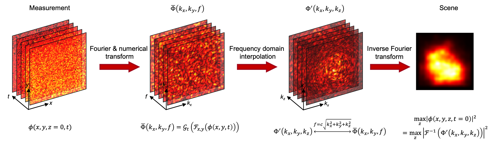

A boundary migration model for imaging within volumetric scattering media
Dongyu Du
Xin Jin
Rujia Deng
Jinshi Kang
Hongkun Cao
Yihui Fan
Zhiheng Li Haoqian Wang Xiangyang Ji Jingyan Song
Zhiheng Li Haoqian Wang Xiangyang Ji Jingyan Song
Nature Communications 2022
Effectively imaging within volumetric scattering media is of great importance and challenging especially in macroscopic applications. In this work, we focus on imaging Lambertian objects embedded in highly scattering media, where signal photons are dramatically attenuated during propagation and highly coupled with background photons. We address these challenges by providing a time-to-space boundary migration model (BMM) of the scattered field to convert the scattered measurements in spectral form to the scene information in the temporal domain using all of the optical signals. The experiments are conducted under two typical scattering scenarios. Even though the proportion of signal photons is only 0.75%, Lambertian objects located at more than 25 transport mean free paths (TMFPs), corresponding to the round-trip scattering length of more than 50 TMFPs, can be reconstructed. Also, the proposed method provides low reconstruction complexity and millisecond-scale runtime, which significantly benefits its application.

Boundary Migration Model

Illustration of the proposed boundary migration model of the scattered field. Taking the measurement as the input, the proposed method follows three steps to recover the scene: Fourier and numerical transform of the measurement to get \(\bar\Phi(k_x,k_y,f)\), time-to-space interpolation of \(\bar\Phi(k_x,k_y,f)\) in frequency domain to obtain \(\Phi'(k_x,k_y,k_z)\) and inverse Fourier transform (IFT) of \(\Phi'(k_x,k_y,k_z)\) to recover the scene information.
Hardware Prototype System
Static Scattering Scenario
Dynamic Scattering Scenario
Results
Comparisons on reconstructing Lambertian objects in the polyethylene foam. a References of 2D, multi-depth, and 3D Lambertian objects used in this experiment. The total thicknesses of polyethylene foam and object depths are marked in the scale below each picture. Taking the letter ‘T’ in the first column as an example, the total thickness of the foam is 15 cm and the ‘T’ is located at 8 cm. All scale bars indicate 10 cm. b Images directly captured by the detector. c Time-gated results which are taken by combining multiple time bins corresponding to the object depths. d Reconstructions using the proposed method. The peak signal-to-ratio (PSNR) is calculated as the quantitative indicator to compare time gating and the proposed algorithm using the references in (a). The results are marked in (c, d). PSNR is in dB.
Scattering Strength Limit Analysis
Related Works
[1] Dongyu Du, Xin Jin, and Rujia Deng. "Non-Confocal 3D Reconstruction in Volumetric Scattering Scenario." IEEE Transactions on Computational Imaging 9 (2023): 732-744.
[2] Rujia Deng, Xin Jin, and Dongyu Du. "Scan-free time-of-flight-based three-dimensional imaging through a scattering layer." Optics Express 31.14 (2023): 23662-23677.
[3] Xin Jin, Dongyu Du, Jiawei Jin, and Yihui Fan. "Time-of-flight based imaging in strong scattering underwater environments." Optics Express 32.21 (2024): 37247--37259.
[2] Rujia Deng, Xin Jin, and Dongyu Du. "Scan-free time-of-flight-based three-dimensional imaging through a scattering layer." Optics Express 31.14 (2023): 23662-23677.
[3] Xin Jin, Dongyu Du, Jiawei Jin, and Yihui Fan. "Time-of-flight based imaging in strong scattering underwater environments." Optics Express 32.21 (2024): 37247--37259.